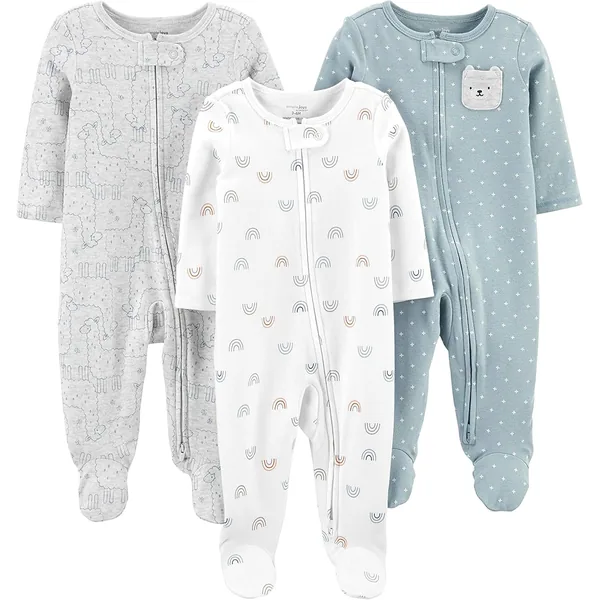
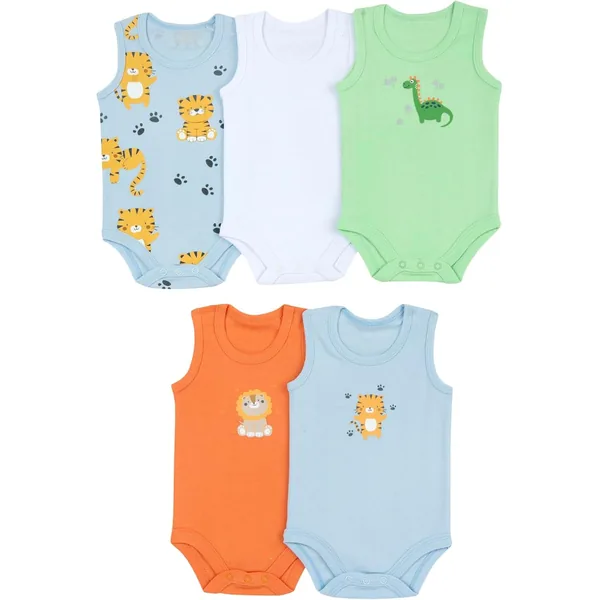

Preparar o enxoval do bebé é uma das partes mais emocionantes da gravidez — e também uma das mais confusas. Quantos bodies são suficientes? Vale a pena comprar tamanho recém-nascido? Precisas mesmo de um saco de dormir? Neste guia respondemos a tudo, com números concretos e recomendações fundamentadas.
Quantas Peças Comprar por Tamanho?
Para o que levar no dia do parto, temos uma lista separada: a mala da maternidade.
A regra geral é ter roupa suficiente para 2–3 dias sem lavar. Com um recém-nascido podes ter 3–4 mudas por dia (especialmente com bodies absorventes e episódios de regurgitação frequentes). Eis a nossa sugestão por tamanho:
| Tamanho | Idade aprox. | Peças sugeridas | Nota |
|---|---|---|---|
| RN / 56 | 0–1 mês | 4–6 bodies, 2–3 pijamas | Muitos bebés saltam este tamanho |
| 1M / 62 | 1–3 meses | 6–8 bodies, 4–5 pijamas | O mais usado nos primeiros meses |
| 3M / 68 | 3–6 meses | 6–8 bodies, 4–5 pijamas | Compra mais — é onde ficam mais tempo |
| 6M / 74 | 6–9 meses | 4–6 conjuntos variados | Começa a gatinhar, prefere conjuntos |
Bodies & Macacões — Quantos e Quais?
O body é a peça base de qualquer enxoval. Serve como roupa interior, como roupa de estar em casa e, nos primeiros meses, até como roupa de saída. Precisas de três tipos:
- Manga curta (4–6 unidades por tamanho): para dias quentes e como camada base no inverno, por baixo de pijamas ou conjuntos.
- Manga longa (4–6 unidades por tamanho): o mais versátil, serve para quase tudo.
- Sem mangas (2–4 unidades): útil no verão ou como roupa interior durante o inverno.

Pack 6 Bodies Manga Curta e Longa + Calças
Um pack que cobre a maior parte das mudas do dia a dia: bodies de manga curta e de manga longa com calças a combinar. Bom custo por peça para quem precisa de quantidade. A composição e as certificações estão indicadas na página do produto.
Ver na Amazon
Pack 5 Bodies Algodão Orgânico
Para pais que preferem materiais certificados. Algodão 100% orgânico GOTS, sem corantes agressivos. Ideal para bebés com pele sensível ou propensão a alergias. Um pouco mais caro, mas vale cada euro.
Ver na AmazonPijamas — O Essencial para as Noites
Para os primeiros meses, recomendamos pijamas com pés inteiros (evita que as meias se percam durante a noite) e com fecho fácil. Os melhores fechos são os bidirecionais — abrem só de baixo para cima, perfeitos para mudar a fralda às 3 da manhã sem acordar o bebé completamente.
Quantos pijamas precisas? Para os primeiros 3 meses, 4–5 pijamas por tamanho são suficientes. Os bebés não sujam o pijama com tanta frequência como os bodies — a não ser que haja um episódio de regurgitação durante a noite.
Sacos de Dormir — 2 são Suficientes para Começar
Os sacos de dormir substituem os cobertores soltos na cama — muito mais seguros para bebés. Precisas de pelo menos 2 (enquanto um está a lavar, tens o outro disponível). A escolha do TOG depende da temperatura do quarto:
| TOG | Temperatura do quarto | Roupa por baixo |
|---|---|---|
| 0.5 | Acima de 24°C | Body manga curta |
| 1.0 | 22–24°C | Body manga curta |
| 1.5 | 18–22°C | Body manga longa ou pijama leve |
| 2.5 | Abaixo de 18°C | Pijama quente |
Saco de Dormir 0.5 TOG Algodão — 0–6 Meses
Um dos mais vendidos na categoria sacos de dormir. Recomendado por pediatras, aprovado como "Hip Healthy". Sem mangas para evitar sobreaquecimento. Cremallera de fácil acesso para fraldas noturnas.
Ver na AmazonRoupa de Exterior — Para Sair de Casa
Nos primeiros meses, o bebé passa a maior parte do tempo em casa. Para sair, 2–3 conjuntos de exterior são mais do que suficientes para começar. Em Portugal, os meses de inverno pedem um macacão quente ou uma combinação de body + calças + casaco. No verão, um conjunto leve de 2 peças é o suficiente.
- Inverno: 1 macacão polar ou plumas, 2–3 pares de calças quentinhas, 2–3 bodies de manga longa
- Verão: 2–3 conjuntos leves de 2 peças, chapéu de sol
- Todo o ano: 1 casaco/blusão leve para transições de temperatura
Acessórios Essenciais — Não te Esqueças Destes
Pack Meias Anti-Derrapantes
6–8 pares de meias são o ideal. Opta por meias com punho duplo — ficam melhor nos pés pequeninos dos bebés e não se perdem tão facilmente.
Ver na AmazonPack 10 Muselinas/Fraldas de Pano Algodão
As muselinas são provavelmente a peça mais versátil do enxoval. Servem como babete, fralda de pano, manta leve, protetor de carrinho, tolha após amamentação — tens sempre uma na mão. Precisa de pelo menos 8–10.
Ver na AmazonO que NÃO Comprar Logo — Poupa Dinheiro
Há peças que parecem essenciais mas que raramente são usadas nos primeiros meses:
- Sapatos de couro para recém-nascido: Bonitos para fotografias, inúteis para o dia a dia. Espera até o bebé começar a andar.
- Muita roupa de cerimónia: O batizado acontece uma vez. Compra um conjunto especial e nada mais.
- Roupa de marca cara em tamanho RN: O risco de não usar é grande. Guarda o orçamento para os tamanhos que duram mais.
- Sets decorativos de acessórios: As tiaras gigantes e os laços exagerados ficam lindos nas fotos, mas não são práticos para o dia a dia.
- Mais de 2 sacos de dormir do mesmo TOG: A temperatura muda com as estações — diversifica.
Checklist de Enxoval — Para Imprimir
Enxoval Mínimo para os Primeiros 3 Meses
Roupa
- 6–8 bodies manga curta (tamanho 62/68)
- 6–8 bodies manga longa (tamanho 62/68)
- 2–4 bodies sem mangas
- 4–5 pijamas com pés
- 2–3 conjuntos de exterior
- 1 casaco ou macacão (consoante a estação)
Dormir
- 2 sacos de dormir (TOG adequado à estação)
- 2–3 lençóis para o berço/moisés
Acessórios
- 8–10 babetes de muselina
- 8–10 muselinas multiusos
- 6–8 pares de meias
- 2 pares de luvas anti-arranhas
- 2–3 toucas (se for inverno)
- 2 chupetas (opcional)